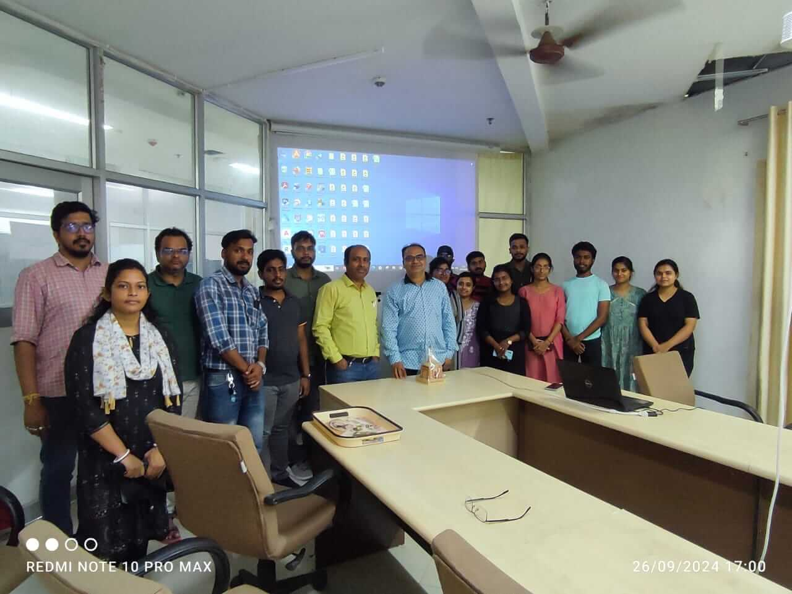
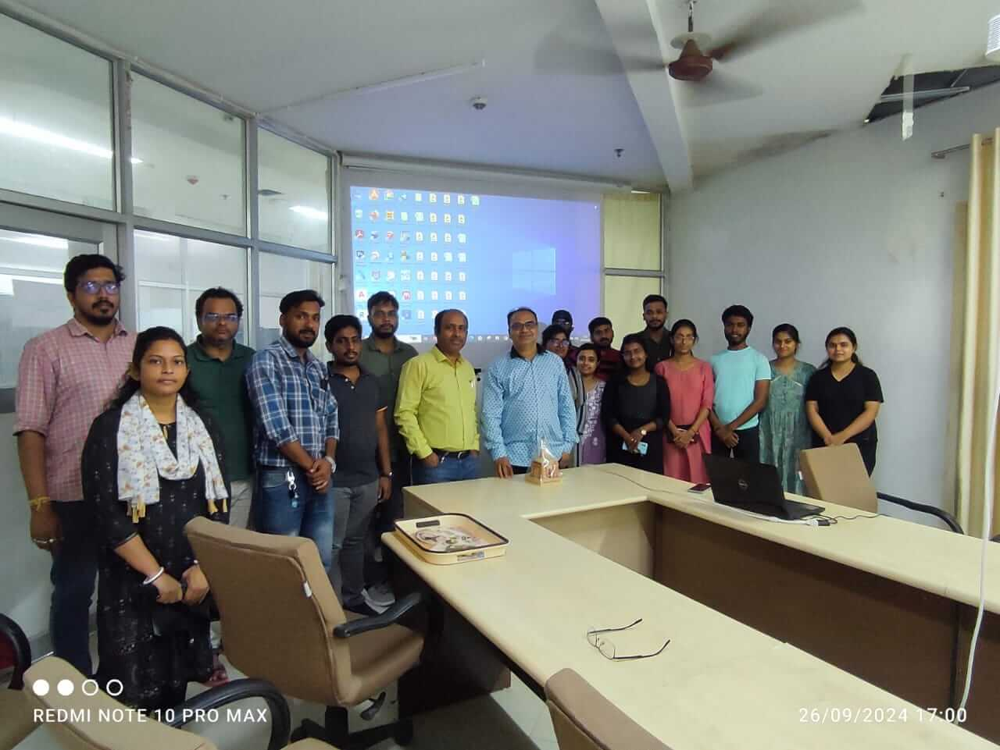

One Day Seminar on Advances in Geotechnical Engineering(2024)
Dr. Arun Kumar Shukla, a scientist from King Saud University, delivered a presentation at our department on Date : 13/11/2024 . All undergraduate (UG) and postgraduate (PG) students were invited to attend this enlightening session, where Dr. Shukla shared insights on his recent research and experiences.
This presentation provided a valuable opportunity to learn from Dr. Shukla’s expertise and engage in discussions that enhanced our academic and research perspectives.
Expert lecture, led by Prof. Dr. U. Johnson Alengaram, Director of the Centre for Innovative Construction Technology (CICT) at the University of Malaya, was a deep dive into 'Current Trends in Sustainable Building Materials and the Construction of the First Cement-Free House for Bus Drivers in University Malaya Campus.
'National Workshop on Importance of Disaster Risk Reduction and Resilience
 

Expert Prof. G L Sivakumar Babu, IISC Bangalore visit
A Symposium on Soft measures for flood and erosion control was organized by Civil Engineering Department NIT Agartala in association with Bramhaputra Board, Agartala Division under Ministry of Jal Shakti, Govt. of India on 26th July,2022. The event was organized in contemplation of celebrating 75th anniversary of India's Independence Azadi ka Amrit Mohatsav. The inauguration of the session was started by lightening a lamp by the dignitaries on the stage and a welcome address by HOD Civil Engineering Department NIT Agartala. The session was chaired by Chief Guest-Prof. H.K. Sharma, Director NIT Agartala; Chief Engineer (WR), Govt. of Tripura; HOD(Civil Engineering Department); Deputy Chief Engineer Brahmaputra Board; Government of India and other profound dignitaries. The symposium was attended by the research scholars, students and practicing engineers from all over the state of Tripura. The expert speakers and other dignitaries stressed on the importance of research in the field of soft measures for flood and erosion control in the basin of river Bramhaputra and other northeastern flood prone areas. Finally, Er. S.K. Deb, Executive Engineer. Brahmaputra Board, briefed about the activities and roles of Brahmaputra Board and delivered vote of thanks. They also assured that such events would be organized in bigger forums in future to raise awareness for all stakeholders to frame policy decisions.
Webinar on Demolition of Supertech Twin Tower, Noida A case study: Experience and Challenges (Coordinator: Dr. Rajib Saha & Dr. Dipankar Sarkar) on September 15, 2022.
Seminar on Energy Measurement to Standardise SPT (Coordinator: IGS Agartala Chapter in association with CE Dept.) on September 9, 2022.
Webinar on Importance of Geotechnical and Geophysical Investigation & its advancements (Coordinator: IGS Agartala Chapter in association with CE Dept.) on June 24, 2022.
Short Term Course on Capacity Building in Geo-spatial Technology (Coordinator: Prof. Umesh Mishra) w.e.f Nov 29 to Dec 19, 2019 & May 25 to June 14, 2022.
Workshop on Recent Advancements & Emerging Economic Aspects of Transportation Geotechnology (Coordinator: Dr. Rajib Saha & Dr. Dipankar Sarkar) w.e.f December 20 to 24, 2021.
International Workshop on Ground Improvement: Emerging and Future Developments (Coordinator: IGS Agartala Chapter in association with CE Dept.) on September 26, 2020.
IGS-NABL webinar on Importance of testing and evaluation of geotechnical properties for better infrastructure (Coordinator: IGS Agartala Chapter in association with CE Dept.) on August 29, 2020.
IGS-NABL webinar on Importance of testing and evaluation of geotechnical properties for better infrastructure (Coordinator: IGS Agartala Chapter in association with CE Dept.) on August 29, 2020.
Webinar on Use of Geogrids in flexible pavements (Coordinator: IGS Agartala Chapter in association with CE Dept.) on June 30, 2020.
Workshop on Landslide hazards & Mitigation in Atharamura region of Tripura State (Coordinator: Dr. S.K. Pal & Dr. S. Paul) on October 30, 2019.
Workshop on Advanced Seismology, Seismic Hazards & Earthquake Engineering (Coordinator: Dr. Sima Ghosh) w.e.f December 12 to 17, 2019.
Workshop on Recent Trends on Water and Wastewater Treatment (Coordinator: Dr. Animesh Debnath & Dr. S.K. Biswal) w.e.f August 12 to 16, 2019.
Workshop on Importance of Seismic Microzonation of Indian cities (Coordinator: IGS Agartala Chapter in association with CE Dept.) w.e.f June 03 to 07, 2019.
Workshop on Dynamics of Foundation (Coordinator: Dr. Rajib Saha) w.e.f June 03 to 07, 2019.